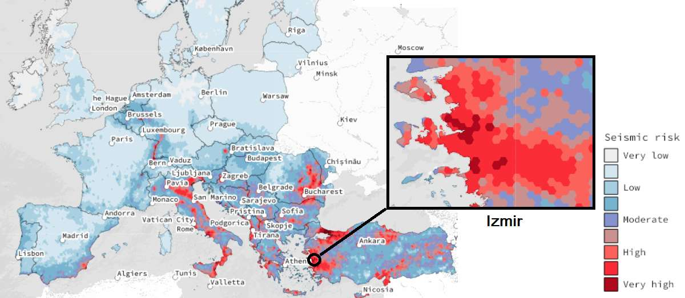

İzmir motivates a city-scale approach
- Interconnected urban assets require coordinated risk management.
- İRAP and local planning provide an institutional entry point.
- The map provides regional context, not a new loss calculation.

EFEHR ESRM20 · loading…